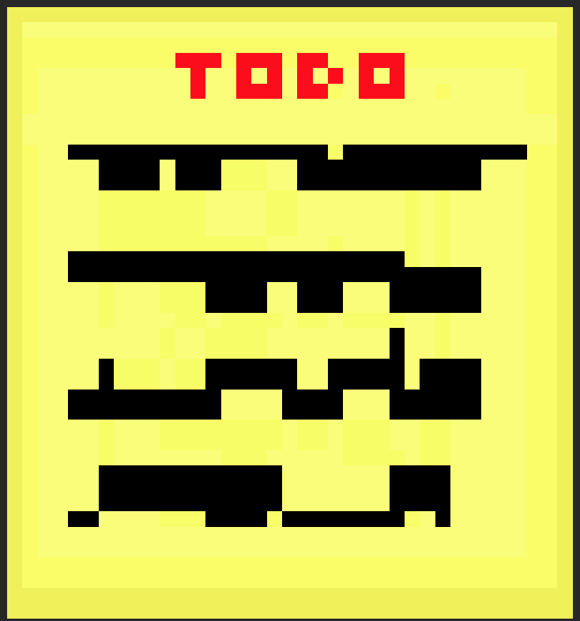

Are Post-It Notes Really Worth The Hype?
A picture of the Post-It Note
T
he Post-It Note, also known as the Sticky-Note, first appeared in 1968 and was created by Arthur Fry and
Spencer Silver. If you don’t know what a Post-It Note is, we will fill you in with some information. The
Post-It Note, created by two 3M employees, Spencer Silver and Arthur Fry, was first not recognized as an
important or useful invention. It was made by combining adhesive, which is a sticky, glue-like substance,
and paper. This combination creates a sticky but removable paper that you can stick to anything! This is
especially useful for keeping notes at the table without it blowing away, there will be no paperweight
needed. The more important aspect of this is that you can stick it to the wall! If you are thinking that it
won’t come off, don’t worry. The materials that make the Post-It Note are sticky enough to actually stick to
the wall, but loose enough that you are able to actually remove it. The invention became widely popular in
1979 and had.
A picture of Arthur Fry
O
ne co creator of the Post-It Note is Arthur Fry. Arthur Fry was born in Minnesota. He studied at the
University of Minnesota. This is where he studied chemical engineering. In 1968, Fry noticed that Spencer
Silver created adhesive, which is a strong material that can stick to things but can be easily removed. Fry
adapted to Silver’s accomplishment and applied adhesive to paper to make a Post-It Note. Originally, Fry
wanted to create a bookmark that wouldn’t fall out or damage the paper. So, he put some of Silver’s adhesive
on it and it worked! Fry realized that his “bookmark” has other potential values when he tested it on other
surfaces. 3M, the company he worked for, noticed this and then deployed it for purchase! Sadly, it failed to
show consumer interest but, in 1979, 3M implemented a sampling strategy and the Post-It Note skyrocketed! 3M
then started calling the Post-It Note “Post-It Brand Super Sticky Notes” in 2003. This version of the
Post-It Note had stronger glue that can adapt to different kinds of surfaces.
S
pencer Silver was another co creator of the Post-It Note. He created adhesive for it. Adhesive is simply a
sticky substance like glue that is extremely strong. Think of it like it is super glue. Some information
about Silver is that he was born in 1962 in San Antonio. He also went to two colleges. The first one Silver
went to is Arizona State University and obtained a bachelor's degree in science. Silver then continued his
education and went to the University of Colorado and obtained a Ph.D in organic chemistry. Silver then,
while still a student, worked as a senior chemist in 3M’s Research Labs. While in the Labs, he specialized
in adhesives. Silver also made the adhesive that is used in the Post-It Notes. There are also some other
facts about Silver. One is that he is also an accomplished painter. He has also received more than twenty
U.S. patents.
Hover over this image!
Hover over this image!
Hover over this image!
Because my friend suggested it and I need to fill in some space.